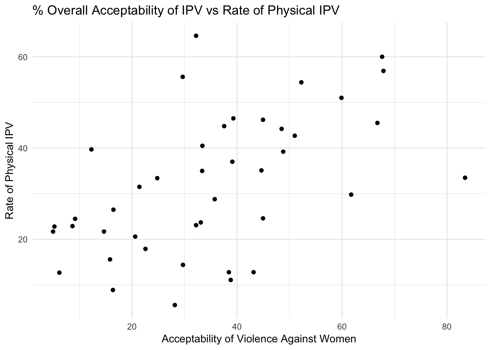

Data
The data being used for this project is taken primarily from the UNICEF website. Further information regarding the actual prevalence rate of violence against women has been taken from the United Nations Statistic Division (UNSD) website.
The main variables being analyzed are as follows:
- Country: Indicates the country name; a total of 42 countries are in the data set (Categorial)
- PV: Actual rate of physical IPV against women of ages 15-49 (in % terms) (Quantitative/Ratio)
- tnorm: Total Percentage of men and women of ages 15-49 who believe that it is justified for a husband to beat his wife if his wife burns the food, argues with him, goes out without telling him, neglects the children or refuses sexual relations (Quantitative/Ratio)
- tUrban: Percentage acceptability of violence against women in urban areas of a country (Quantitative/Ratio)
- tRural: Percentage acceptability of violence against women in rural areas of a country (Quantitative/Ratio)
- tPoorest: Percentage acceptability of violence against women among individuals occupying the lowest wealth quintile of a country (Quantitative/Ratio)
- tSecond: Percentage acceptability of violence against women among individuals occupying the second lowest wealth quintile of a country (Quantitative/Ratio)
- tMiddle: Percentage acceptability of violence against women among individuals occupying the middle wealth quintile of a country (Quantitative/Ratio)
- tFourth: Percentage acceptability of violence against women among individuals occupying the second highest wealth quintile of a country (Quantitative/Ratio)
- tRichest: Percentage acceptability of violence against women among individuals occupying the highest wealth quintile of a country (Quantitative/Ratio)
The following table summarizes the key variables in the data set:
df <- tbl_df(project)
df.sum <- df %>%
select(PV, tnorm, tUrban, tRural, tPoorest, tSecond, tMiddle, tFourth, tRichest) %>% # select variables to summarise
summarise_all(funs(min = min,
q25 = quantile(., 0.25),
median = median,
mean = mean,
q75 = quantile(., 0.75),
max = max))
df.stats.tidy <- df.sum %>% gather(stat, val) %>%
separate(stat, into = c("var", "stat"), sep = "_") %>%
spread(stat, val) %>%
select(var, min, q25, median, mean, q75, max) # reorder columns
## Warning: attributes are not identical across measure variables;
## they will be dropped
print(df.stats.tidy)
## # A tibble: 9 x 7
## var min q25 median mean q75 max
## <chr> <dbl> <dbl> <dbl> <dbl> <dbl> <dbl>
## 1 PV 5.6 21.7 30.6 31.9 43.8 64.6
## 2 tFourth 1.35 16.7 32.2 33.7 45.5 83.6
## 3 tMiddle 4.85 23 35.8 37.2 50.0 83.6
## 4 tnorm 4.95 20.8 33.4 34.9 45.0 83.4
## 5 tPoorest 8.55 26.3 41.5 41.5 53.6 81.2
## 6 tRichest 1.55 10.6 23.1 26.4 35.0 85.8
## 7 tRural 6.8 24.9 40.0 38.4 51.8 81.9
## 8 tSecond 5.4 24.6 40.3 38.8 51.6 82.4
## 9 tUrban 3.15 15.4 26.7 29.7 40.6 87.7
We can see from this tables that the across all countries in the data set, there is a large range in both the prevalence and social acceptability rate of physical IPV against women. Moreover, the average perception of IPV acceptability is higher in rural areas, compared to urban areas as well as higher among poorer people compared to wealthier individuals.
Norm Data Visualization
In order to determine which tests would be most appropriate to compare the degree of acceptability of IPV against women in different regions and among different sets of individuals, first it is necessary to understand how the data are distributed. The following plots provide visual representations of some of the data included in the previous table.
Urban vs Rural Norm Data
boxplot(rsplit~r, main = "% Acceptability of IPV Against Women in Rural and Urban Areas", ylab = "Percentage Acceptability", xlab = "Region")
From this plot, we can see that there is a higher mean percentage acceptability of IPV against women in rural areas compared to urban areas. Furthermore, we can see that the data is slightly right skewed and therefore is not normally ditributed.
Norm Data by Wealth Quintile
boxplot(split~wealth, main = "% Acceptability of IPV Against Women by Wealth Quintile", ylab = "Percentage Acceptability", xlab = "Wealth Quintile")
From the boxplots, we see that these data are also right skewed and therefore are not normally distributed. Furthermore, the mean percentage acceptability of IPV appears to be highest among the poorest individuals and lowest among the richest individuals.
Preliminary Analysis
Given that my data involves the combination of two data sets, as part of a preliminary analysis, I will examine the correlation between norms related to IPV and actual prevalence of physical IPV in order to assess whether the findings from past literature hold true for my data set.
Below is a scatterplot depicting the relationship between the percentage of overall acceptability of IPV and the actual prevalence rate.
ggplot(project, aes(x = tnorm, y = PV)) + geom_point() + theme_minimal() + labs(title ="% Overall Acceptability of IPV vs Rate of Physical IPV", x = "Acceptability of Violence Against Women", y = "Rate of Physical IPV")

We can see from the scatterplot that there appears to be a moderately strong positive linear correlation between the norms of acceptability of IPV against women and the actual rate of physical IPV for the countries in the data set.
Next, we will conduct a simple linear regression to further test the relationship between these quantitative variables.
reg <- lm(PV ~ tnorm)
summary(reg)
##
## Call:
## lm(formula = PV ~ tnorm)
##
## Residuals:
## Min 1Q Median 3Q Max
## -23.485 -8.163 2.133 8.141 33.823
##
## Coefficients:
## Estimate Std. Error t value Pr(>|t|)
## (Intercept) 17.3234 4.2599 4.067 0.000217 ***
## tnorm 0.4178 0.1074 3.890 0.000370 ***
## ---
## Signif. codes: 0 '***' 0.001 '**' 0.01 '*' 0.05 '.' 0.1 ' ' 1
##
## Residual standard error: 13.13 on 40 degrees of freedom
## Multiple R-squared: 0.2745, Adjusted R-squared: 0.2563
## F-statistic: 15.13 on 1 and 40 DF, p-value: 0.0003697
We can see from these results that the coefficient for tnorm is significan,t and while this simple linear regression does not take into account and control for other variables that might affect the actual rate of IPV against women, the results from this preliminary analysis suggest that the findings from existing literature hold true for my data set.
Main Analysis Methods and Results
Urban vs. Rural Norm Data
The explanatory variable in this case is whether the sampled individuals come from an urban or rural region of a country. The response variable is their perceptions of how justified IPV against women is.
Given that the data are not normally distributed, in order to analayze the difference in norm perceptions between people in urban and rural areas, a non parametric test would be appropriate. Since I am attempting to test the difference between two groups, and since my alternative hypothesis in this case is one-tailed, a one-tailed Wilcoxon Rank Test is appropriate.
wilcox.test(tRural, tUrban, alternate = "larger")
## Warning in wilcox.test.default(tRural, tUrban, alternate = "larger"):
## cannot compute exact p-value with ties
##
## Wilcoxon rank sum test with continuity correction
##
## data: tRural and tUrban
## W = 1132.5, p-value = 0.02532
## alternative hypothesis: true location shift is not equal to 0
The p-value in this case is 0.02523. This value is less than 0.05 but greater than 0.01. Hence, it is sufficiently small to reject the null hypothesis (\(H_0\)) at the 0.05 level. That is, there is a higher percentage acceptability of IPV against women in rural areas compared to urban areas.
Norm Data by Wealth Quintile
The explanatory variable in this case is the wealth quintile of the sampled individuals. The response variable is their perceptions of how justified IPV against women is.
Given that the data are not normally distributed, in order to analayze the difference in norm perceptions between people of different wealth statuses, in this case as well a non parametric test would be appropriate. Since I am attempting to test the difference between more than two groups, a Kruskal Wallis Test is appropriate.
kruskal.test(split~factor(wealth))
##
## Kruskal-Wallis rank sum test
##
## data: split by factor(wealth)
## Kruskal-Wallis chi-squared = 16.351, df = 4, p-value = 0.002583
The p-value from this analysis is 0.002583 which is less than 0.01 suggesting that we can reject the null hypothesis (\(H_2\)) that there is no significant difference in IPV acceptability among individuals from different wealth quintiles at the 0.01 level of significance. Given that the Kruskal Wallis Test has yielded a signficant result, it would be appropriate to conduct a non parametric multiple comparisons test, such as the pairwise Mann-Whitney U-Test, to assess which wealth quintiles exhibit significant differences in IPV acceptability.
pairwise.wilcox.test(split, wealth)
## Warning in wilcox.test.default(xi, xj, paired = paired, ...): cannot
## compute exact p-value with ties
## Warning in wilcox.test.default(xi, xj, paired = paired, ...): cannot
## compute exact p-value with ties
## Warning in wilcox.test.default(xi, xj, paired = paired, ...): cannot
## compute exact p-value with ties
## Warning in wilcox.test.default(xi, xj, paired = paired, ...): cannot
## compute exact p-value with ties
## Warning in wilcox.test.default(xi, xj, paired = paired, ...): cannot
## compute exact p-value with ties
## Warning in wilcox.test.default(xi, xj, paired = paired, ...): cannot
## compute exact p-value with ties
## Warning in wilcox.test.default(xi, xj, paired = paired, ...): cannot
## compute exact p-value with ties
## Warning in wilcox.test.default(xi, xj, paired = paired, ...): cannot
## compute exact p-value with ties
## Warning in wilcox.test.default(xi, xj, paired = paired, ...): cannot
## compute exact p-value with ties
##
## Pairwise comparisons using Wilcoxon rank sum test
##
## data: split and wealth
##
## Fourth Middle Poorest Richest
## Middle 1.000 - - -
## Poorest 0.383 1.000 - -
## Richest 0.404 0.053 0.004 -
## Second 0.869 1.000 1.000 0.028
##
## P value adjustment method: holm
The results of this analysis show that there is a significant difference between perceptions among the “Poorest” quintile and the “Richest” quintile of individuals (p<0.01) as well as among the “Second” and “Richest” quintile of individuals (p<0.05). Specifically, the percentage acceptability of IPV against women is significant greater among the poorest of individuals compared to the richest of individuals as well as the second poorest group of individuals compared to the richest individuals.